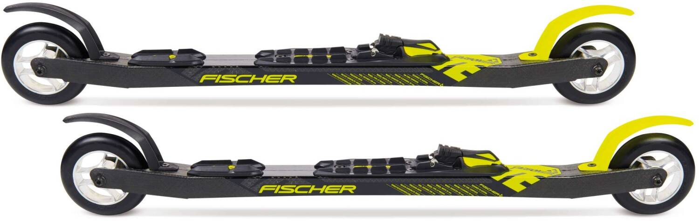
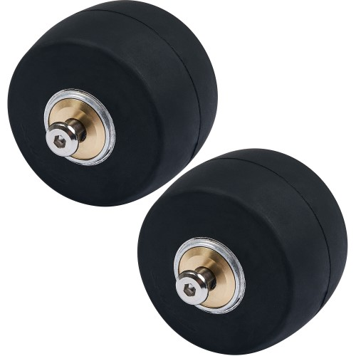
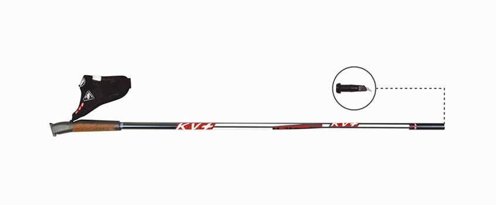

The Skis
A good flex of roller ski frames allows the bending of the frame at peak times and returning to its original state. The frame imitates a feeling like doing cross-country skiing.
Roller ski with a good flex feel almost like a driving experience in cross country and is ideal for summer training in cross-country skiing.

Skating Skis
The Tires
For roller ski, there are also various forms of tires (rubber, polyurethane, pneumatic tires).
Pneumatic tires are often equipped at cross or offroad roller ski. They are made for bad asphalt conditions or ways in forest.
Roller ski rubber tires provide a high rolling resistance and create speeds knowing from cross-country skiing.

Rubber Wheels
Polyurethane tires are usually faster with less abrasion like rubber. Every skier should know that fast roller ski wheels concerning no high trainings effect and poles are less necessary with running speed.
The Poles
Classic or Skating? To select the correct size for skating poles take a look at this formula:
Size (in cm) x 0.91 (x 0.92 for cross/offroad) = roller ski pole skating (in cm)
Classic roller ski poles should be calculated with this formula:
Size (in cm) x 0.86 (x 0.92 for cross/offroad) = roller ski pole classic (in cm)

The Pole